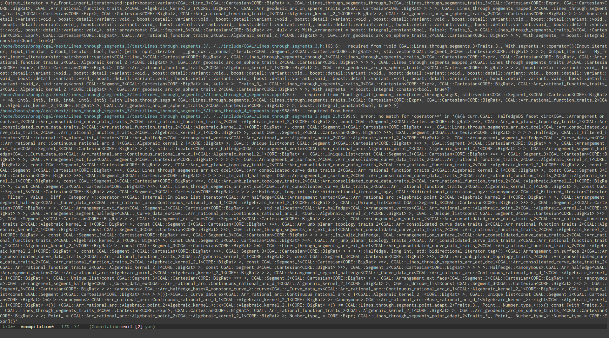

Software Engineering using Generic Programming and Computational Geometry
Philipp Möller

Who?
- works at GeometryFactory
- improved interfaces/concepts for surface meshes and polyhedra
- language lawyer
- visualization
using std::disclaimer;Generic Programming
- created by Alexander Stepanov and David Musser
- abstraction without penalty
- value semantics
- reuse through commonalities in algorithm requirements
- reuse through common syntax
Lifting
Continuously raise the level of abstraction over input parameters.
Group those abstractions into Concepts.
Use concept refinement and hierarchies of concepts to expose implementation differences.
Concepts
A concept is a set of requirements consisting of valid expressions, associated types, invariants, and complexity guarantees.
David Abrahams, Jeremy Siek
Depending on whom you ask...
- interface specifications?
- consistent models?
- type-theoretical predicates?
A Very Short History
- Standard Template Library by Stepanov and Lee at HP
- STL adopted as part of the ISO C++ library (not std::string)
- proliferation of concepts and generic programming outside of ISO
- multiple proposals for inclusion of concepts in C++11
- compromise proposal added to C++11, later dropped
- significant revisions and extensions post-C++11
Generic Programming with C++
- no explicit language level support
- templates and meta-programming provide the implementation mechanism
- boilerplate (iterator_traits, allocator_traits, pointer_traits, function_traits…)
- complicated hackery to get simple features
- library level support is in sight
Dreaded Compiler barf
Methods
- different styles
- different requirements
- personal preferences
Straight Forward
concept Stack<typename X> {
typename value_type;
void Stack::push(value_type);
void Stack::pop();
value_type Stack::top();
bool Stack::empty();
};
- intuitive
- object-y
- good for ground up work
- hard to interface non-intrusively
- no built-ins
Trivial Types + Traits
- use regular types (minus Equality and Swappable) to represent data
- absolutely all functionality of the algorithm into traits
Trivial Types + Traits
The Good
- retroactive modeling
- easy to specify
- full customization
The Bad
- full customization
- algorithms compose poorly
- boilerplate heavy (construct_*)
The Ugly
favors ad-hoc conceptsFree Functions
concept SinglePassRange<typename X> {
typedef iterator_type::type iterator;
where SinglePassIterator<iterator>;
iterator begin(X&); // notice free functions
iterator end(X&);
};
namespace mine {
struct my_vector {
int x[20];
};
int* begin(my_vector& x) { return x; }
int* begin(my_vector& x) { return x + 20; }
template<>
struct iterator_type {
typedef int* type;
};
}
Free functions
- pinnacle of versatility
- retroactive modeling
- ADL is a pain to handle in generic code
- requires advanced language features
Computational Geometry with Generic Programming
- mathematically sound domain → often not enough
- cover multiple dimensions (static and dynamic)
- varying/non-explicit object representations
- different geometries
- allow for exactness
- needs to expose most of these qualities for efficient algorithms
Pragmatics
- allow user types/different libraries
- understandable, usable interfaces
- customizations
- be implementable
- perform reasonable
- support number types
A study of graph algorithms will produce Graph concepts that describe the behavior of graphs, whereas a study of linear algebra algorithms will produce Matrix and Vector concepts.Similar algorithms don not necessarily use similar predicates: where to lift your algorithms to?
Different Solutions: CGAL
- heavyweight Kernels
- CGALTraits for algorithms
- Kernel adaption
CGAL continued
- kernels allow manipulation of the whole algorithm
- kernels extensible by refinement
Different Solutions: Boost.Geometry
- minimalist kernels provide type introspection
- tags to dispatch to implementations
- type adaption through meta-functions
- strategies encapsulate different implementations
Boost.Geometry continued
- hard code
- versatile towards types
- algorithms not as flexible
Practical: Halfedge Data Structures revisited
- very common combinatorial data structure
- about 3~4 different concepts in CGAL
Concept Features
- retroactive modeling
- property map support
- native graph support
- partial halfedge data structures
Concepts and Adapters
Not all algorithms require full Halfedge Data Structures. Provide views on types:
- Bidirectional
- Directed
Features as Properties
Abstract optional features of Halfedge Data Structures into properties.
Algorithms require properties. Mutable algorithms can introspect for available properties and handle them.
Models with sugar
- easy static properties
- dynamic properties
- full C++11 allocator support
- be fast and small
- convenient
template<typename... Options>
class Surface_mesh;
struct Vertex_properties {
Simple_cartesian<double>::Point_3 point;
};
Surface_mesh< Vertex_properties<Vertex_properties>
, Dynamic_properties<std::true_type>>
polyhedron;
for(auto& v : vertices(polyhedron)) {
// ...
}
Painful to be pretty
BOOST_PARAMETER_FUNCTION(
(void),
join_vertex,
tag,
(required (graph, *) )
(required (edge, *) )
(optional
(next_map, *, boost::get(boost::edge_next, graph))
(prev_map, *, boost::get(boost::edge_prev, graph))
)
)
{ my_join_vertex_impl(graph, edge, next_map, prev_map); }
join_vertex(my_graph);